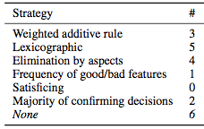

Decision Making in Uncertainty Visualization

VDMU (2015)
Authors
Thomas Torsney-Weir, Michael Sedlmair, Torsten Möller
Materials
Abstract
In this position paper we investigate the role of decision making in uncertainty visualization. We introduce common decision making strategies identified by the cognitive science community [22]. These strategies are then used to reanalyze 21 design study papers that have previously been used as a foundation for defining visual parameter space analysis [26]. We found that current strategies in these tools relied mostly on one parameter at a time and are about filtering alternatives. Based on these results, we propose three questions for further discussion and research.